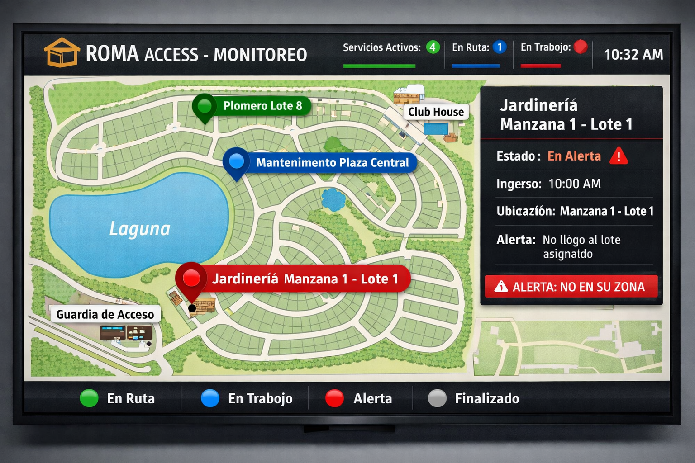

.png)
Hoy los barrios saben quién ingresa…
pero no pueden verificar si el trabajo se realiza donde fue autorizado. ROMA Access soluciona eso.
El personal es registrado en guardia con destino asignado.
Desde el puesto de seguridad se visualizan todos los servicios activos en un plano del barrio.
El prestador valida su llegada mediante un punto de control en el lote.
Si no llega al lugar asignado o hay irregularidades, el sistema lo detecta automáticamente.
La mayoría de los sistemas registran quién entra. Pero no pueden verificar si el servicio se realiza donde fue autorizado.Esto genera zonas grises, falta de trazabilidad y dependencia de controles manuales. Roma Access elimina esa incertidumbre.
Visualización clara de todos los servicios activos.
Control en tiempo real desde una única pantalla.
Alertas automáticas sin necesidad de llamadas ni seguimiento manual.
Validación simple mediante escaneo en el domicilio autorizado.
Sin aplicaciones obligatorias ni procesos complejos.
Registro automático de horarios de llegada.
Información verificable y trazable.
Historial completo de actividad por servicio.
Mayor control sin aumentar la carga operativa.
Roma Access transforma la gestión de ingresos en barrios privados, combinando tecnología, control y simplicidad operativa.
Cada ingreso queda registrado con destino definido y seguimiento en tiempo real.
Digitaliza el control de ingresos y elimina errores manuales. Menos confusión en portería, más precisión en cada acceso.
Un sistema claro y confiable genera mayor sensación de seguridad en los residentes y eleva el estándar del barrio.
Visualización dinámica de movimientos, alertas automáticas y control por zonas en un entorno intuitivo y profesional.

Roma Access permite supervisar accesos y tareas en tiempo real, reducir conflictos y profesionalizar la gestión.
Solicitar presentación personalizadaSin compromiso. Evaluamos tu barrio y te mostramos cómo funcionaría Roma Access en tu entorno real.
Respuestas rápidas sobre implementación, funcionamiento y adaptación de Roma Access.
No. Roma Access complementa y potencia el trabajo del personal existente, permitiendo supervisar accesos, tareas y movimientos con mayor precisión y control.
Sí. Roma Access puede configurarse según la estructura, dimensiones y necesidades operativas de cada barrio.
El proceso de configuración y puesta en marcha puede completarse en pocas semanas, dependiendo de la infraestructura existente.
No necesariamente. El sistema puede integrarse con la infraestructura ya disponible en el barrio.
La administración y el personal autorizado cuentan con acceso controlado según permisos definidos.